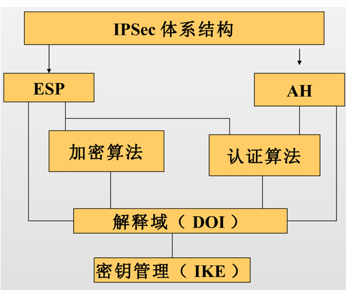
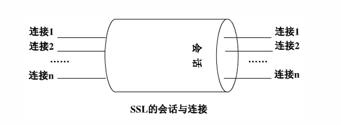

IPSec、SSL与VPN
IPSec 协议体系：构建网络层的信任根基
IPSec（IP Security）的核心价值在于其作为IPv6的必备组件（IPv4中为可选），将安全机制直接植入网络层（Layer 3），为上层协议（TCP/UDP）提供透明的加固，是构建物联网传输防线、解决通信安全（机密性、完整性、可用性）的信任根基。
IPSec 架构逻辑：
IPSec并非单一协议，而是一个基于开放标准的框架（Algorithm Independent），由四大支柱协同运行：
- 体系结构（Architecture）： 定义IPSec的一般性概念、安全需求及整体运行机制。
- 解释域（DOI, Domain of Interpretation）： 定义加密/认证算法的标识及操作参数（如密钥生存期），确保异构设备间的互操作性。
- 密钥管理（IKE, Internet Key Exchange）： 负责动态协商安全关联（SA）及密钥分配。
- 核心协议（AH/ESP）： 执行实际的安全封装与转换。

- 核心协议对比分析： 架构师需通过下表权衡 AH（鉴别头） 与 ESP（封装安全载荷） 的应用选择：
| 安全服务 | AH (鉴别头) | ESP (仅加密) | ESP (加密并认证) |
|---|---|---|---|
| 访问控制 | √ | √ | √ |
| 无连接数据的完整性 | √ | - | √ |
| 数据源发认证 | √ | - | √ |
| 抗重放攻击检测 | √ | √ | √ |
| 机密性（加密） | - | √ | √ |
| 有限的通信流保密 | - | √ | √ |
SA，SPI，SAD，SPD
SA 是两个通信实体之间经过协商建立起来的一种协定，它规定了双方将使用什么认证算法、加密算法以及什么参数和密钥来进行通信。这些参数协商完毕后，会被统一存放在双方的安全关联数据库（SAD）中
SA 永远是单向的。因此双向通信时，必须至少建立两个 SA
唯一标识 SA 的“三元组”：SPI（安全参数索引），目的 IP 地址，安全协议
SPI 本质上就是这份安保合同的“流水编号”，它是一个被生成并包含在 AH 头和 ESP 头中的 32 位整数
- 关键数据结构（SAD 与 SPD）：
- SPD（安全策略数据库）： 决定“是否处理包”。其条目基于选择符（五元组：源/目的IP、协议、源/目的端口）。
- 地址类型： 支持主机地址、单播、组播、任播及广播地址。
- 策略操作： 丢弃（Discard）、绕过（Bypass）、加载IPSec（Protect）。
- SA指针：指向SA集合，应用IPsec协议，算法
- SAD（安全关联数据库）：包含现行的SA条目，源/目的IP，协议
- 其中每个SA由三元组索引。决定“如何处理包”。关键条目包括：
- 32位SPI（安全参数索引）： 唯一标识SA。1–255由IANA保留，0保留，有效范围为 256至2^32-1。
- 序列号计数器与溢出标志： 32位计数器，溢出标志用于决定溢出后SA是否失效。
- 抗重放窗口： 基于位图（Bitmap）和计数器。
- 算法与密钥： 涵盖AH/ESP的加密与认证算法。
- IV（初始向量）与模式： 包含IV及IV模式（ECB, CBC, CFB, OFB）。
- 其他： IPSec操作模式、路径最大传输单元（PMTU）及SA生存期。
- SPD（安全策略数据库）： 决定“是否处理包”。其条目基于选择符（五元组：源/目的IP、协议、源/目的端口）。
IPSec 报文处理机制：滑动窗口与进出站逻辑
IPSec通过严格的序列号验证与滑动窗口机制，在不增加过多计算负载的前提下，从底层排除了过期或重复报文的干扰。
- AH/ESP 进出站处理流程：
- 外发处理（Outbound）：
- 检索SPD：匹配五元组确定策略。若需保护，则获取SAD指针。
- 检索SAD：提取密钥、算法及SPI。
- 封装：增加序列号，计算ICV（完整性校验值），根据SA模式进行加密。
- 接收处理（Inbound）：
- 标识SA：基于报文头部的SPI及目的IP查找SAD。
- 抗重放检查：利用滑动窗口验证序列号。
- 完整性与解密：验证ICV，解密载荷。校验失败则丢弃，避免“能量剥削”攻击。
- 外发处理（Outbound）：
- 滑动窗口抗重放原理：接收端利用 位图（Bitmap）维护一个32位（或更高）的滑动窗口：
- 过期包： 若序列号小于窗口左边界（太旧），直接丢弃。
- 重复包： 若序列号在窗口内，但在位图中对应位已标记为“已收到”，则视为重放。
- 有效包： 只有落在窗口内且位图未标记，或超过右边界且验证通过的包才被接受。接收后需更新位图及窗口位置。
IKE（互联网密钥交换协议）
IKE是IPSec的控制平面。
IKE能在不安全的公网上安全地协商出高强度的密钥，并自动填充SAD。
- 两阶段协商机制：
- 第一阶段（ISAKMP SA）：建立安全管理通道。先建立一个安全的、经过身份验证的信道（IKE SA 或 ISAKMP SA），用来保护后续的协商通信不被偷听。
- 主模式（Main Mode）： 经过6次报文交换。其精妙之处在于身份保护，ID交换发生在加密信道建立之后，安全性最高。
- 野蛮模式（Aggressive Mode）： 仅需3次交换。虽然速度快，但身份信息明文传输，且容易暴露节点隐私，通常仅用于IP地址不固定的移动感知终端。
- 第二阶段（Quick Mode）： 复用ISAKMP SA。在第一阶段建立的加密保护下，快速协商具体的AH/ESP SA（即IPSec SA）参数。
- 快速模式：用于协商阶段2的SA，协商受到阶段1协商好的IKE SA的保护。这 种交换模式下交换的载荷都是加密的
- 第一阶段（ISAKMP SA）：建立安全管理通道。先建立一个安全的、经过身份验证的信道（IKE SA 或 ISAKMP SA），用来保护后续的协商通信不被偷听。
- IKE 与 IPSec 的关系：IKE将协商好的SPI、加密算法、认证密钥等信息填充进SAD，供IPSec在数据转发层面直接调用。
- 转场过渡： 当IPSec与IKE的这种动态防护能力被应用到跨物理边界的通信时，便形成了VPN。
| 对比维度 | 主模式 (Main Mode) | 野蛮模式 (Aggressive Mode) |
|---|---|---|
| 交互消息数量 | 6 条 消息（分三步走：协商、换密钥、认证） | 3 条 消息（所有载荷打包在一起发） |
| 身份保护功能 | 有保护（最后两条包含身份的信息是加密传输的） | 无保护（信息集成度高，明文发送，无身份保护） |
| 对等体标识方式 | 只能采用 IP 地址 方式标识对等体 | 可以采用 IP 地址 或者 Name (主机名) 标识对等体 |
| 安全性与速度 | 安全性高，耗时较长 | 速度快（往返次数少），但安全性较弱 |
(注：阶段 2 建立 IPSec SA 时使用的是**快速模式 (Quick Mode)**，共有 3 条消息，且全程在阶段 1 的加密保护下进行。)
D-H(迪菲-赫尔曼密钥交换)
D-H(迪菲-赫尔曼密钥交换) 不是一种加密算法，而是一种密钥交换算法
- 通信前，Alice 和 Bob 约定两个大整数 n 和 g （要求 1<g<n）。这两个数字是全网公开的，黑客也能看到
- Alice 在心里随机想一个大整数 a（绝对保密）。Bob 在心里随机想一个大整数 b（绝对保密）。
- 计算半成品并发送：
- Alice 利用公式计算出 Ka=g^a mod n，并把 Ka 明文发给 Bob。
- Bob 利用公式计算出 Kb=g^b mod n，并把 Kb 明文发给 Alice。
- Alice 收到 Kb 后，结合自己心里的 a，计算 K=Kb^a mod n。Bob 收到 Ka 后，结合自己心里的 b，计算 K=Ka^b mod n。
VPN（虚拟专用网）
VPN通过逻辑手段在公网上构建“专用网络”
- 概念与核心特性：
- 虚拟（Virtual）： 建立在逻辑连接之上，无需像专线一样进行物理铺设。通过隧道技术在公共数据网络上仿真一条点到点的专线技术
- 私有（Private）： 核心在于机密性（加密）与身份认证，确保只有授权节点能接入隧道。
- 分类体系：
- 协议层次： 二层（L2TP/PPTP）、三层（IPSec）、七层（SSL）。
- 应用模式： 远程接入（Access VPN）、内部扩展（Intranet）、外部合作伙伴接入（Extranet）。
优缺点综合评估：
- 优势： 相比物理专线大幅度节约成本；支持灵活扩展；安全性极高。可靠，保证QoS，安全
- 挑战： 加密导致延迟增加；对底层 PMTU（路径最大传输单元）敏感，配置不当可能导致分片丢失及计算开销剧增。
隧道技术（Tunneling）：这是 VPN 的核心！负责在公网上开辟通道。
- 加解密技术（Encryption & Decryption）：把明文变成密文，防止中途被截获偷看（比如之前学的 DES/AES）。
- 密钥管理技术（Key Management）：解决如何在公网上安全传递密钥的问题（★ 这里完美串联了我们上一节刚学的 Diffie-Hellman 算法和 IKE/ISAKMP 协议！）。
- 身份认证技术（Authentication）：确认“你是你”，防伪造冒充（比如用户名/密码、数字证书）
隧道（Tunnel）
隧道实质上就是一种“套娃式封装”。把一种协议（协议X）打包塞进另一种协议（协议Y）的肚子里传输
隧道协议内包括以下三种协议：
- 乘客协议（Passenger Protocol）：真正要传输的原始数据报文
- 封装协议（Encapsulating Protocol）：中间起保护和伪装作用的协议
- 承载协议（Carrier Protocol）：在公网上运送包裹的底层网络协议（如公网的 IP 协议）
SSL 协议与传输层安全
SSL 是建立在可靠的 TCP 协议之上的安全协议，专门在两台机器（通常是客户端和服务器）之间建立一条加密的、可信任的安全通道
透明性与独立性。SSL 就像一个“隐形防弹衣”，它独立于应用层协议之上
- 身份认证（防冒充）：使用 PKI 和 X.509v3 数字证书。双向认证
- 传输机密性（防偷窥）：使用 对称加密算法
- 传输完整性（防篡改）：使用 MAC（消息认证码）
SSL 协议栈架构：
- 握手协议（Handshake）： 核心。负责算法协商、服务器身份验证（证书）及预主密钥交换。
- 记录协议（Record）： 负责数据的分段、压缩及对称加密封装。
- 警报协议（Alert）： 传递加密异常或证书错误等信号。
- 密码规格变更协议（Change Cipher Spec）： 告知对端后续报文将转入加密状态。
SSL协议定义了两个通信主体：客户（Client）和服务器（Server）。其中，客户是协议的发起者
连接 (Connection) vs 会话 (Session)
- SSL会话（session）：一个SSL会话是客户与服务器之间的一个关联。会话由握手协议创建。会话定义了一组 可供多个连接共享的密码安全参数。
- SSL连接（connection）：一个连接是一个提供一种合适类型服务的传输。连接是暂时的，每一个连接和一个会话关联。

SSL 握手过程
- Client/Server Hello： 协商最高支持的协议版本及密码套件。
- 客户端首先向服务器发起请求，发送自己支持的最高 SSL/TLS 版本号、自己生成的客户端随机数（Client Random）、支持的密码套件列表（Cipher Suites）以及压缩方法
- 服务器收到后进行回应，确认双方要使用的安全协议版本、从列表中选定一种密码套件，并发送服务器生成的随机数（Server Random）
- 服务器认证与密钥交换：服务器需要向客户端证明自己的合法身份，并提供加密用的公钥。
- 服务器发送自己的 X.509v3 数字证书链，里面包含了服务器的公钥和 CA 的签名
- Server Key Exchange（服务器密钥交换，可选）：如果证书里的公钥只能用于签名而不能用于加密交换（例如只支持签名的 RSA 或 DSS 证书），服务器会额外发送此消息来补充密钥交换参数
- 客户端认证与密钥交换（“生成会话主密钥”）
- 客户端首先利用内置的 CA 根证书验证服务器证书的真伪。
- 客户端生成一个名为 预备主密码（Pre-Master Secret） 的核心随机数。客户端使用刚刚从证书中拿到的服务器公钥对它进行加密，然后安全地发送给服务器
- 服务器收到密文后，用自己的私钥解密得到预备主密码。此时，双方手中都掌握了三个参数：客户端随机数、服务器随机数、预备主密码。双方在本地利用单向散列函数将这三者混合，独立计算出完全相同的“主密钥（Master Secret）”，并由此派生出后续通信用的对称加密密钥、MAC（消息认证码）密钥和初始化向量（IV）等。
握手完成与确认（“启用加密通道”）
- Change Cipher Spec（更改密码规格）：客户端发送此消息，通知服务器：“从现在开始，我发的所有数据都将使用刚才协商好的对称密钥进行保护”
- Finished（结束消息）：紧接着，客户端发送第一条已经被协商密钥加密保护的消息。
- 服务器确认：服务器验证成功后，同样回复一条
Change Cipher Spec消息和一条加密的Finished消息
加密范围与层次： SSL实现“端到端”保护。与IPSec协议无关性不同，SSL严格绑定TCP。它不保护IP头部，但保护TCP负载中的所有应用层数据，是应用层安全的“金钟罩”。
- 转场过渡： 这种“即插即用”的灵活性，使得SSL VPN在物联网移动办公及运维领域迅速崛起。
SSL VPN 的崛起
SSL VPN直接利用了 Web 浏览器内置的 SSL/HTTPS 协议，不需要像 IPSec 那样安装专门的拨号软件
- 无视 NAT 和防火墙：因为它走的是标准的 HTTPS 流量（443端口）
- 精准的“最小权限”：它能精确控制用户只能访问某几个特定的 URL 或应用，完全隐藏了公司内网的真实拓扑结构
- 无客户端（Clientless）： 只要有标准浏览器即可访问，解决了感知层管理终端碎片化的问题。
保证接入安全（谁能进）、保证传输安全（防窃听）、保证内部资源访问安全（进去能看啥）。
SSL VPN 的三大工作模式
- Web 浏览器模式（最核心、最常见）：“零客户端”，打开网页就能用，管理成本极低。但缺点是只能保护 Web 网页通信（适合校园网查成绩、电子政务办公）。
- 客户端模式：针对非 Web 应用（如要用内网的 ERP 客户端）。需要在电脑上装个小插件/软件，优点是能保护所有的 TCP/UDP 流量。
- LAN-to-LAN 模式（网对网）：用 SSL 协议把两个局域网连起来。但注意，在这个场景下它的性能和效率远不如 IPSec，通常只作为补充。
| 比维度 | IPSec VPN (跨海大桥) | SSL VPN (任意门) |
|---|---|---|
| 工作层次 | 网络层（为底层基础设施提供保护） | 应用层/传输层之上（基于浏览器） |
| 客户端要求 | 必须安装专用的 VPN 客户端软件 | 零客户端（Web模式下只需浏览器） |
| 权限与控制 | 给的是整个网络的接入权（一旦连上等于进入内网） | 极其精细，只给特定 URL 或应用的访问权（隐藏网络结构） |
| NAT与防火墙 | 穿越 NAT 和防火墙非常困难（容易被拦） | 使用标准 HTTPS，轻松穿越防火墙，无 NAT 问题 |
| 最佳应用场景 | 站对站（Site-to-Site / LAN-to-LAN），总公司连分公司 | 远程移动办公（Remote Access），出差员工访问邮件/Web系统 |